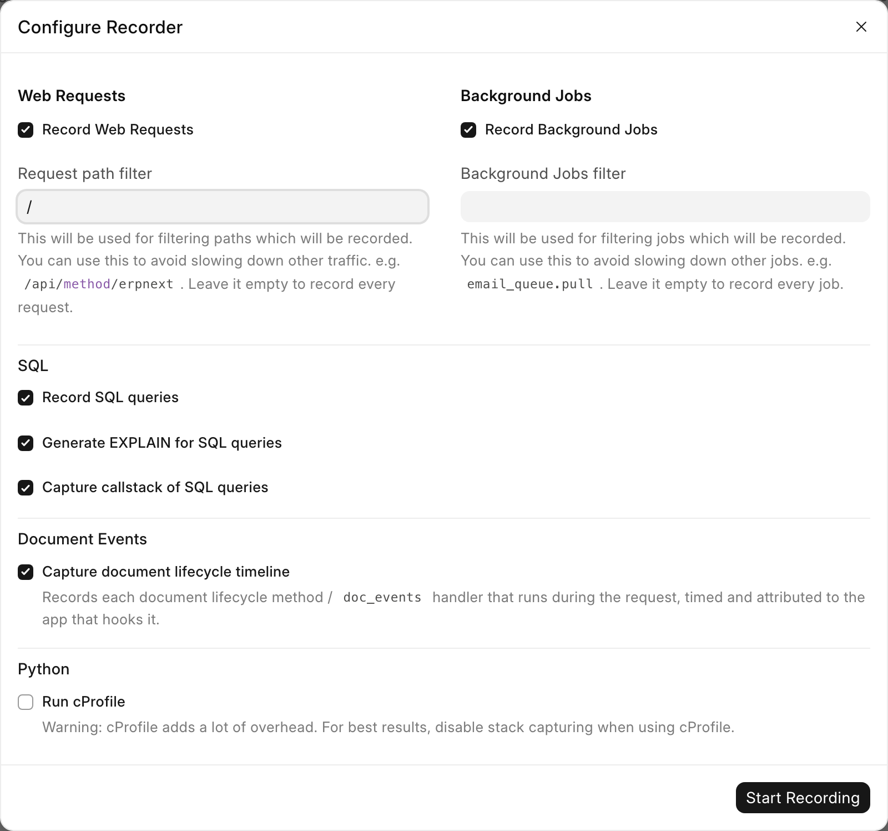
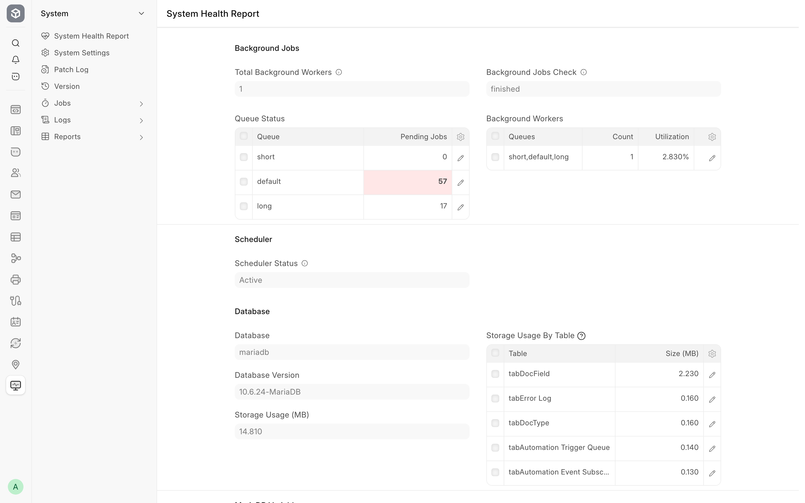

Logs and Monitoring¶
Frappe records errors, logins, data access, scheduled job runs and background jobs in log DocTypes. Use them to find out why something failed, who did what, and whether workers and the scheduler run. Use the Recorder and the System Health Report to look at performance and the state of the site. Most of these DocTypes need the System Manager role.
Overview¶
| DocType | Route | What it records |
|---|---|---|
Error Log |
/desk/error-log |
Unhandled exceptions and errors logged by code. |
Activity Log |
/desk/activity-log |
Login, logout and impersonation. |
Access Log |
/desk/access-log |
Exports, printed documents, report views, private file and backup downloads. |
Scheduled Job Log |
/desk/scheduled-job-log |
One row per run of a scheduled job. |
API Request Log |
/desk/api-request-log |
API calls, if Log API Requests is set in System Settings. |
RQ Job |
/desk/rq-job |
Background jobs in Redis queues. |
RQ Worker |
/desk/rq-worker |
Background workers that run now. |
Recorder |
/desk/recorder |
Requests and jobs with their SQL queries, while recording is on. |
System Health Report |
/desk/system-health-report |
A live summary of workers, scheduler, database, cache, email and errors. |
Error Log¶
Frappe adds an Error Log for each unhandled exception in a request or a background job. Code can also add one with frappe.log_error.
| Label | Fieldname | Description |
|---|---|---|
| Title | method |
Short description, often the last line of the traceback. |
| Error | error |
Full traceback. |
| Reference DocType / Reference Name | reference_doctype, reference_name |
The document the error is about, if known. |
| Seen | seen |
Set when a user opens the log. The list shows "Seen" or "Not Seen". |
| Trace ID | trace_id |
ID of the request or job. |
| Fingerprint | fingerprint |
Hash of the stack. The same error has the same fingerprint. |
The form shows how often the error occurred, first seen, last seen and a 30-day chart. Use Show Similar Errors to list logs with the same fingerprint, and Open reference document to open the document.
Some errors are queued in Redis first, for example during read-only requests. The job frappe.deferred_insert.save_to_db saves them every 15 minutes. Clear Error Logs in the list menu deletes all Error Logs.
Activity Log and Access Log¶
Activity Log has Operation (operation: Login, Logout or Impersonate), Status (status), User, IP Address and Subject. Failed logins also show here. Use it to audit who logged in and from where.
Access Log has User, Export From, Reference Document, Report Name, Filters, File Type, Method and Timestamp. Use it to see who exported or printed data.
Scheduled Job Log¶
Each run of a scheduled job adds a row with Scheduled Job (scheduled_job_type), Status (Scheduled, Complete or Failed) and Details (the traceback if it failed). Open the Scheduled Job Type to see the frequency and the last run. See Scheduler.
RQ Job and RQ Worker¶
RQ Job and RQ Worker are virtual DocTypes. They read the jobs and workers from Redis. Nothing is saved in the database.
RQ Job fields: Job ID, Job Name, Queue (default, short or long), Status (queued, started, finished, failed, deferred, scheduled or canceled), Timeout, Time Taken, Arguments and Exception.
- The list shows "Scheduler: Active" or "Scheduler: Inactive". If inactive, use Actions > Enable Scheduler.
- Actions > Remove Failed Jobs deletes all failed jobs of the site.
- On a job with status
startedorqueued, Force Stop job stops it.
RQ Worker shows Queue(s), Status, Current Job ID, Successful Job Count, Failed Job Count, Last Heartbeat and Utilization %. If the list is empty, no worker runs. See Background Jobs.
Recorder¶
The Recorder captures web requests and background jobs with their SQL queries, timings, call stacks and EXPLAIN output. Only Administrator can use it.
- Go to Recorder (
/desk/recorder). - Click Start.
- Set the options and click Start Recording.
- Do the slow action in another tab.
- Click Stop.
- Open a row to see its queries.

| Option | Default | Description |
|---|---|---|
| Record Web Requests / Request path filter | on, / |
Records requests whose path starts with the filter. |
| Record Background Jobs / Background Jobs filter | on, empty | Records jobs whose name matches the filter. Empty records all. |
| Record SQL queries | on | |
| Generate EXPLAIN for SQL queries | on | |
| Capture callstack of SQL queries | on | |
| Capture document lifecycle timeline | on | Times each controller method and doc_events handler. |
| Run cProfile | off | Adds Python profile output. It is slow. |
Recording stops on its own after 10 minutes. On a recorded request, Suggest Optimizations proposes database indexes, and Add Indexes adds the ones you select. Use Clear to delete all recordings. Export and Import in the menu move recordings between sites.
From the command line, use bench --site <site> start-recording and bench --site <site> stop-recording.
System Health Report¶
Open System Health Report (/desk/system-health-report). Frappe builds the report each time you open it. It does not save it.

| Section | What it shows |
|---|---|
| Background Jobs | Number of workers, pending jobs per queue, worker use. Background Jobs Check runs a test job and shows its status. |
| Scheduler | Scheduler Status, the oldest job that did not run, and failing scheduled jobs of the last 7 days. |
| Database | Database type and version, storage use, largest tables. |
| MariaDB Variables | Buffer pool size and binary logging. |
| Cache | Number of Redis keys and memory use. |
| Realtime (SocketIO) | SocketIO Ping Check (Pass or Fail) and the transport mode. |
| File Storage and Backups | Size of public and private files, number and size of backups on the server. |
| Users | Total users, new users and failed logins in the last 30 days, active sessions. |
| Emails | Outgoing, pending, failed, handled and unhandled emails. |
| Errors | Error count of the last day and the top errors. |
System Console¶
System Console (/desk/system-console) runs Python or SQL on the site from the desk. Only Administrator has access.
- Type
Pythonruns the code in the same restricted environment as Server Scripts. It needsserver_script_enabledincommon_site_config.json. See Server and Client Scripts. - Type
SQLruns only read queries:SELECT,EXPLAIN, andWITHon MariaDB. Queries that read__Authare rejected. - Frappe rolls back all changes unless Commit is set.
- Each run adds a
Console Logwith the script and whether it committed. - Show Processlist lists the running database queries.
Log Settings and cleanup¶
Log Settings (/desk/log-settings) sets how long Frappe keeps each log. Each row in Logs to Clear has Log DocType and Clear Logs After (days). A daily job deletes older rows. Defaults come from the default_log_clearing_doctypes hook, for example:
| Log DocType | Days |
|---|---|
| Error Log | 14 |
| Scheduled Job Log | 7 |
| Email Queue | 30 |
| Activity Log | 90 |
| API Request Log | 90 |
To shrink a very large log table at once, use the CLI. It first backs up the table, unless you add --no-backup. Then it copies recent rows to a new table and swaps the tables:
bench --site frappe.localhost clear-log-table --doctype "Scheduled Job Log" --days 30
For developers¶
try:
process_sample_order(order)
except Exception:
frappe.log_error(title="Sample Order sync failed", reference_doctype="Sample Order", reference_name=order.name)
frappe.log_error(title=None, message=None, reference_doctype=None, reference_name=None, *, defer_insert=False)saves the current traceback if you do not passmessage. It returns theError Logdocument.- To make your own log DocType clearable, add a static method
clear_old_logs(days)to its controller, and add it to the hook:
# sample_app/hooks.py
default_log_clearing_doctypes = {
"Sample Sync Log": 30,
}
- The Recorder API is in
frappe/recorder.py(frappe.recorder.start,stop,get,delete). See Performance.